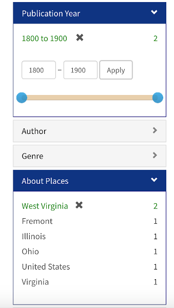
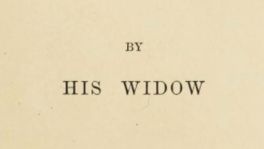

If your relative has a popular name like John Smith, you can narrow your search by first searching for "Smith, John" and then adjusting the facets on the left-hand side of the catalog. In this example, I limited the results to show materials that are between 1800-1900 and are related to West Virginia.

If you're searching the collection guides instead of the catalog, you might try searching for the name in both orders. So, for example, I would first search for "Laurin Penland" and then try again by searching for "Penland, Laurin".
If your relative was or is a woman, you may find that your search is more difficult or even impossible (due to centuries of patriarchy and sexism). You can try searching for their maiden names or married names. Sometimes married women were referred to by their husband's names (e.g. "Mrs. John Smith") or even just as their wife or widow. This means that it might be easier to search for materials by the names of male members of the family. Sometimes you may find that the materials include information about female family members even though their names are not mentioned in the catalog records.
